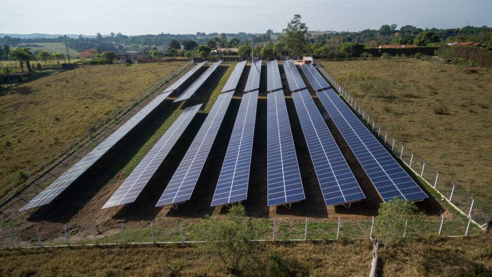
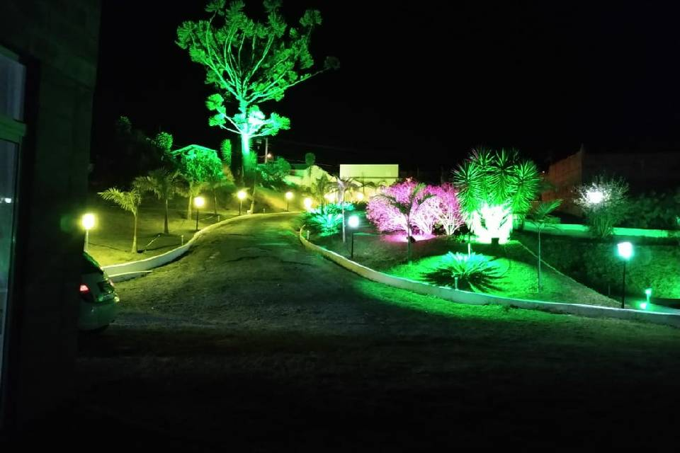

GUARDIÃO DA LUZ DO SOL
Projetado por Yuri


O projeto “Guardião da Luz do Sol” tem como objetivo criar um sistema de iluminação noturna pra áreas rurais que usam só energia solar. A ideia principal é aproveitar a luz do dia e guardar ela em baterias, pra depois usar essa energia durante a noite. Isso ajuda muito em lugares onde não tem rede elétrica ou quando a luz cai com frequência.
Durante o dia, os painéis solares pegam a luz do sol e transformam em energia elétrica. Essa energia vai pras baterias, que seguram ela até escurecer. Quando fica de noite, sensores percebem a falta de luz e ligam automaticamente as lâmpadas LED. Isso é bom pra trilhas, currais, galpões ou estufas, onde o pessoal precisa continuar trabalhando mesmo depois do pôr do sol.
O bom desse sistema é que ele usa coisas que já existem, tipo os painéis solares, as baterias e as lâmpadas de LED. Com isso, o custo pra manter é baixo, e ainda ajuda o meio ambiente porque não gasta combustível. Ele também dá mais independência pra quem vive no campo, já que não precisa tanto da energia da cidade.
Mas tem uns pontos negativos também. O custo inicial pode ser meio alto, por causa dos equipamentos. E as baterias precisam de manutenção com o tempo. Além disso, em lugares onde quase não faz sol, o sistema pode não funcionar tão bem quanto o esperado.
No geral, é um projeto que tenta melhorar a vida das pessoas do campo, usando o que a gente já tem de tecnologia e pensando em sustentabilidade.